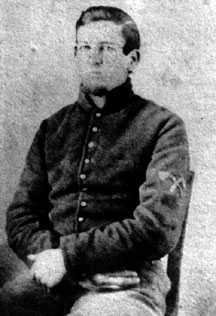

|

NAME: William Wesley Perkins III
BORN: 1841
DIED: 1924
ALLEGIANCE: Union
HIGHEST RANK: Private
UNIT: Ohio Volunteer Infantry, Company F; Army of the Ohio,
3rd Battalion, Pioneer Corps, Company H
RECORD: Enlisted September 10, 1861.
Fought at Ivy Mountain, Kentucky; Shiloh, Tennessee;
Corinth, Mississippi; and Perryville, Kentucky. Detached to
Pioneer Corps in November 1862. Fought at Murfreesboro,
Tennessee; Chickamauga, Georgia; and Missionary Ridge.
Participated in Atlanta Campaign. Mustered out November 1,
1864, at Nashville.
|
|
Like his fellow enlistees, William Wesley Perkins III joined
the Union army to fight the Rebels. He never expected to
carry a shovel and a pickaxe. Those simple tools, however,
wielded by the skilled workmen of the Pioneer Corps, were as
valuable to the Army of the Ohio as any musket or rifle.
Perkins joined Company F of the 59th Ohio Volunteer Infantry
in September 1861. He had his first taste of battle at Ivy
Mountain, Kentucky, in early November, before settling into
winter quarters with the 59th in Columbia. In the spring of
1862, the regiment was assigned to Brigadier General Thomas
L. Crittenden's division of the Army of the Ohio. Perkins's
unit joined the march to Shiloh, Tennessee, where it fought
on April 7. In a letter to his parents, Perkins wrote, "It
was a hard battal and I hope the last for it is no fun for
to have the cannon boll flying over a fellow head." Perkins
soon found himself dodging cannonballs again during the
siege of Corinth, Mississippi, in late April. Six months
later he fought at Perryville, Kentucky.
November 1862 brought a welcome change for Perkins, when he
was assigned to the newly created Pioneer Corps, Major
General William S. Rosecrans, commander of the Army of the
Ohio, recognized the need for skilled engineers to prepare
necessary roads and earthworks, so he ordered that two
experienced laborers or mechanics be detached from each
company to form the Pioneer Corps. Unlike army engineers,
who moved to the rear during battle, the pioneers took up
arms when necessary.
As a new pioneer, Perkins received the distinctive sleeve
patch of crossed hand axes, which he displays prominently in
this photo. He explained his new duties in a letter to his
brother Rice: "We are ordered to hull all the wood we can in
camp some goes every day from this company. There is someone
from every regiment for pioneers and macanic. We have worked
one day this week." As the corps became more organized and
began doing the work it was formed to do, however, the
pioneers' easy days came to an end.
The Pioneer Corps took an active part in the Battle of
Murfreesboro, Tennessee, December 31, 1862-January 2, 1863.
Perkins and his unit fought at Chickamauga, Georgia, in
September 1863 and at Missionary Ridge, Tennessee, that
November. The pioneers also performed valuable service with
both shovel and musket during the Atlanta Campaign in the
summer of 1864.
Perkins was mustered out of service in Nashville on November
1, 1864, his three-year enlistment at an end. He returned to
Ohio, married, and fathered seven children. The former
pioneer died in 1924 at the age of 83.
Source: Civil War Times Illustrated
40:4 (August 2001), 80.
|